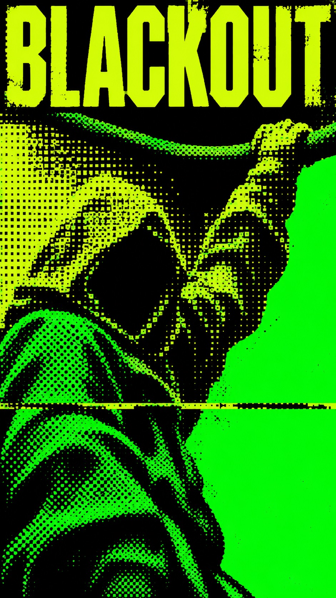
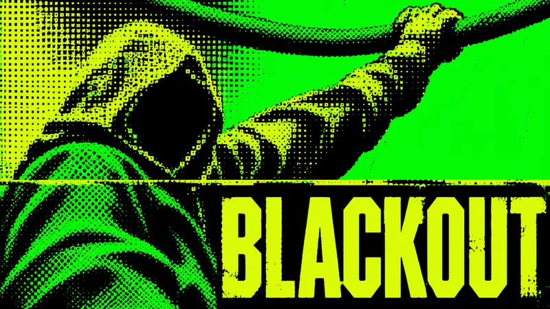
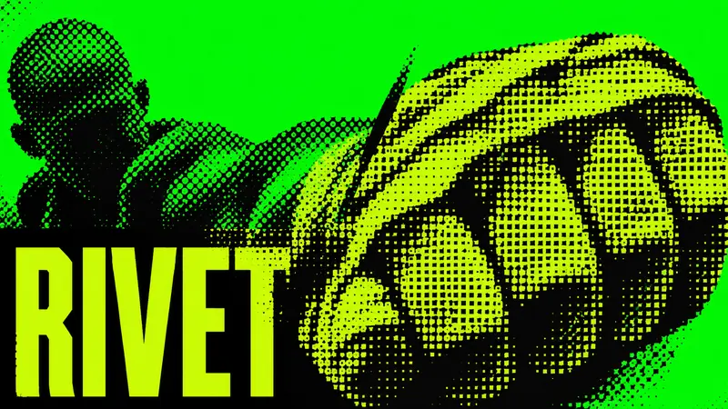
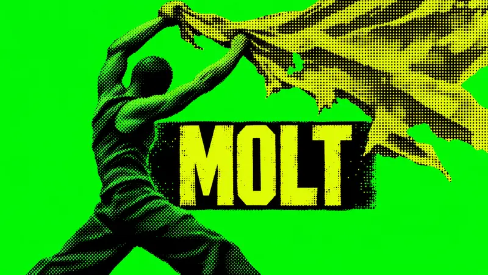
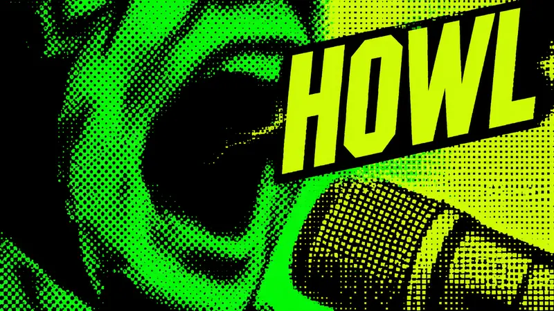

Type Posters · AI image style prompt
Toner Riot
Electric-green character key art crushed into coarse round screen and acid-lime square dither, with huge industrial titles and straight print splices.

4 example cases
Same style.json, different subjects. Each case's values are in the examples section of the JSON.




What this style does
Electric-green character key art crushed into coarse circular screen and acid-lime square dither, with industrial titles and abrupt straight print splices. The image emerges from damaged information, not polished illustration.
Signature traits
- Original dystopian human character key art is reduced to faceless black masses and violent fluorescent screenprint.
- Electric green fields and round clustered dots carry R1, while acid-lime angular compressed titles and large square dither carry R2 visibly in every case.
- The coarse screen IS the drawing: cells spaced 0.7–1.2 percent of the short edge erase features, leaving only a few face planes and no fine linework.
- Use electric green for ground and hero highlights, dead black for shadows and knockout blocks, and acid lime for the oversized title and square-screen highlights.
- Flat clipped exposure crushes skin, fabric and props into ink; no glossy lighting, smooth shading, wrinkles, anime eyes or illustrative outlines survive.
- Movable black knockout blocks and a straight scan-splice interrupt the heavy human mass, with about 28–32 percent genuinely quiet solid field.
style.json
{
"schema_version": "2.2",
"style_name": "Toner Riot",
"style_slug": "toner-riot",
"style_version": "1.0",
"style_summary": "Electric-green character key art crushed into coarse circular screen and acid-lime square dither, with industrial titles and abrupt straight print splices. The image emerges from damaged information, not polished illustration.",
"category": "Type Posters",
"environment_variables": {
"ASPECT_RATIO": "9:16 or 16:9",
"STYLE_FIDELITY_ANCHORS": "Injected CORE and FLEX rules",
"SOURCE_CONTENT_TO_AVOID": "Injected source exclusions",
"SUBJECT": "Original human character and action with minimal surviving detail",
"MAIN_TEXT": "Exact uppercase character codename",
"DESIGN_DIRECTION": "Case-specific scale, crop and paired-ratio arrangement"
},
"style_fidelity_anchors": [
"[CORE] Original dystopian human character key art is reduced to faceless black masses and violent fluorescent screenprint.",
"[CORE] Electric green fields and round clustered dots carry R1, while acid-lime angular compressed titles and large square dither carry R2 visibly in every case.",
"[CORE] The coarse screen IS the drawing: cells spaced 0.7–1.2 percent of the short edge erase features, leaving only a few face planes and no fine linework.",
"[CORE] Use electric green for ground and hero highlights, dead black for shadows and knockout blocks, and acid lime for the oversized title and square-screen highlights.",
"[CORE] Flat clipped exposure crushes skin, fabric and props into ink; no glossy lighting, smooth shading, wrinkles, anime eyes or illustrative outlines survive.",
"[CORE] Movable black knockout blocks and a straight scan-splice interrupt the heavy human mass, with about 28–32 percent genuinely quiet solid field.",
"[CORE] Angular condensed upright industrial sans letters are large and solid with blunt clipped corners; the primary name stays exactly readable through aggressive image collisions.",
"[FLEX] Move and rotate the title, switch close and full-body crops, and relocate the straight splice to express each character story.",
"[FLEX] Round screen may merge into square cells locally, while whole masses bleed off edges and broad voids swallow secondary detail."
],
"source_content_to_avoid": [
"MARATHON and ESCAPE WILL MAKE ME GOD wording",
"Reference tactical masked character, armor, cross emblem and exact pose",
"Reference top-left tiny branding and top-right slogan pairing",
"Reference left vertical title rail, circle-and-bar symbol and right portrait column",
"Archived RELAY, BRINE, PARALLAX and MNEME names and their courier, listener, surveyor and archivist concepts",
"Any stair-step layout device, watermark, username, logo or QR code"
],
"visual_deconstruction": {
"genre": "Dystopian human character key art / raw underground screenprint poster",
"grammar": "Two-ink brutal print behavior, binary shadow masses, coarse screen-built bodies, machine sans, hard type-image scale conflict.",
"signature": {
"R1": "Transform electric-green tactical portrait plus tiny top header into loose-clothed outcast figures collided by huge acid-lime type.",
"R2": "Replace fixed left title rail and circle-bar diagram with movable knockout blocks and straight scan-splices; no cloned side-column layout."
},
"fusion": {
"genre_and_hero": "Shared R1/R2 human character key art, new outcast identities",
"palette": "R1 electric green main fields and hero light; R2 acid-lime title and square highlight zones; shared black shadows",
"finish": "R1 circular clustered dots and merged blacks + R2 large square ordered dither, both construct rather than decorate the figure",
"type": "R2 heavy angular condensed industrial title; R1 blunt ink-edge softness",
"layout": "R1 monumental invasive crop + R2 strong solid black/type structure, both transformed into movable knockout blocks and straight splice",
"secondary_elements": "R2 machine geometry reduced to one straight interruption, removing circle-bar identity",
"energy": "Shared harsh binary contrast and coarse information loss, R1 breathing field plus R2 dense image zone"
},
"energy": {
"density": "68–72 percent active area; 28–32 percent quiet field, derived from R1 30–35 and R2 20–25 percent estimates",
"layering": "2–3 hard ink planes; title and body collide; straight splice divides one image",
"disorder": "Screen dropout, clumped dots, jagged threshold edges; no invented dust, scratches or distressed paper",
"tension": "Overscale anatomy, aggressive edge crop, huge title pressure, face almost erased; no calm illustration finish"
},
"series_constants": {
"palette_roles": "electric green ground/hero, black shadow/block, acid lime title/square highlights",
"light": "same flat violently clipped exposure, no light temperature modeling",
"kit": "coarse round and square screen, movable solid knockout block, one straight scan splice, broad quiet field",
"title": "solid angular compressed upright sans, lime on black, primary name only"
},
"anchor_balance": "Visible R1 contribution: green field + circular black-mass anatomy; visible R2 contribution: lime machine title + square dither. Genre, exposure and energy shared; neither relegated to a small accent."
},
"composition": {
"structure": "Heavy screened human mass interlocks with oversized solid title blocks; open fields carry tension. Straight splice may be horizontal or diagonal but never stairs.",
"quiet_share": "28–32 percent",
"design_layer": "At least a quarter of frame through knockout blocks, title and flat fields; never image plus small caption.",
"placement": "First-ratio titles top, bottom, right vertical, center diagonal. Main masses left, right, left/bottom, right. Recompose each companion rather than crop or pad."
},
"typography": {
"class": "Extremely heavy condensed angular industrial sans, squared counters and clipped corners, upright letters even if whole word rotates",
"primary": "MAIN_TEXT exactly, each letter readable; no subtitle or added punctuation",
"secondary": "No texture copy needed; structure comes from ink and type, not fake metadata"
},
"color_palette": {
"electric_green": "#08E000 — ground and round-screen highlights",
"dead_black": "#020402 — shadows and knockout blocks",
"acid_lime": "#C5FF00 — title and square-screen highlights"
},
"image_treatment": {
"method": "Binary photo-derived xerox/screenprint; no outlined illustration underneath. Round and square cells spaced 0.7–1.2% of short edge, roughly 7–12 pixels per 1000px width. Across eyes only a few cells survive. Blacks merge; highlight holes make shape.",
"region": "Screen only in human and prop zones; solid fields remain uninterrupted. Square region substantial, at least a quarter of image mass; round region also substantial.",
"finish": "Harsh clipped planes, clumping and missing information, slight plate-edge roughness; no soft gradients or paper aging."
},
"design_rules": [
"Screen constructs anatomy; detailed polished figure with dot overlay fails.",
"Keep both source contributions large and visible in every sample.",
"Change title orientation and body placement across the series.",
"Use genuine full-frame ratio recomposition without padding.",
"Preserve readable exact primary name while allowing bold collisions."
],
"do": [
"Destroy small details until the human exists as a few threatening ink masses.",
"Maintain clean solid negative fields against violent coarse image density.",
"Build title-image collisions from the character action."
],
"avoid": [
"Fine uniform texture over detailed drawing",
"Anime face, crisp wrinkles, polished musculature, hair strands or fabric seams",
"Reference costume, emblem, composition or wording",
"Stair steps, circle-bar symbol or repeated left title rail",
"Soft bloom, cinematic gradients, paper stains, extra white or grey ink"
],
"prompt_template": "Create one full-bleed {ASPECT_RATIO} dystopian character poster. Raw copied photographic information, almost destroyed by coarse black print: threatening masses rather than a detailed illustration. Fuse round-screen green anatomy with large lime square-dither zones and oversized machine lettering.\n{STYLE_FIDELITY_ANCHORS}\nCharacter: {SUBJECT}\nComposition: {DESIGN_DIRECTION}\nPrimary text exactly: {MAIN_TEXT}. No added slogans or punctuation.\nExclude: {SOURCE_CONTENT_TO_AVOID}\nNo refined face, contour drawing, fine texture overlay or soft rendering.",
"negative_prompt": "polished comic illustration, manga eyes, crisp wrinkles, intact skin detail, fine halftone veil, hair strands, anatomical contour drawing, 3D gloss, soft gradient, vignette, bloom, dirty paper, decorative scratches, stair-step layout, MARATHON, cross emblem, circle-bar logo, uniform title rail, extra primary text, padded aspect ratio",
"examples": [
{
"case_name": "blackout",
"values": {
"MAIN_TEXT": "BLACKOUT",
"SUBJECT": "A hooded voltage thief in a loose rubber smock hangs by one hand from a thick overhead cable, shoulders twisted towards us; face is an almost empty black cavity.",
"DESIGN_DIRECTION": "Low-angle torso rises on the left; raised arm exits above. Portrait title across top black block, lower-right quiet green. Wide version arm spans diagonally across width and title occupies lower-right. Round dots build shoulder; square dither devours hood and forearm. A single straight horizontal scan break severs the torso image."
}
},
{
"case_name": "rivet",
"values": {
"MAIN_TEXT": "RIVET",
"SUBJECT": "A shaven-headed underground bareknuckle combatant punches a huge wrapped fist towards the lens; small head is almost lost behind the fist, no facial detail.",
"DESIGN_DIRECTION": "Foreshortened fist swells center-right, head upper-left. Portrait title across lower black block with fist intruding slightly; top-right quiet green. Wide version head far-left, fist fills right half and title runs along low edge. Square-screen knuckles collide with round-screen arm, interrupted by a short oblique black splice."
}
},
{
"case_name": "molt",
"values": {
"MAIN_TEXT": "MOLT",
"SUBJECT": "A bareheaded contamination fugitive in a fitted dark sleeveless underlayer and plain trousers strides sideways while ripping a ragged plastic poncho up and off the body. Three-quarter side view at body height, both arms flung up; exposed head, neck, torso and separated legs form an instantly legible human silhouette. The torn sheet flies up and away as a second broad mass, connected only at the raised hands, with a large green gap between sheet and body. Molting is visibly something peeling off a body, never a hooded figure or top-down crouch. Face stays erased.",
"DESIGN_DIRECTION": "Portrait: dynamic side-on body rises from lower-left/center, separated striding legs crop at the bottom, arms lift toward upper-right; a large ragged square-dither sheet blows across the upper area as a distinct flying mass. Strong flat green negative space separates sheet from bare head and torso. Horizontal condensed MOLT sits in the MIDDLE zone on a black scan-splice knockout, interlocking with the gap and body edge without hiding the shedding action; no top, bottom or side title rail. Wide: recompose the same peeling gesture across the width, body left/center and separate sheet sweeping upper-right, green gap clearly open; MOLT remains mid-height in a compact black block in that gap. Coarse round dots build body, coarse lime square cells build sheet; screen creates broad planes, with no wrinkles or facial linework. Keep the existing series palette, clipped exposure, distressed angular condensed upright type and roughly 28–32 percent quiet solid field."
}
},
{
"case_name": "howl",
"values": {
"MAIN_TEXT": "HOWL",
"SUBJECT": "A pirate broadcast agitator screams into a blunt cylindrical microphone; extreme open-mouth and jaw crop, eyes and crown outside frame, one human only.",
"DESIGN_DIRECTION": "Bold case: mouth becomes a huge almost abstract black hole within coarse round dots; microphone is square-screen blocks. Portrait jaw dominates right, quiet black left wedge, huge oblique title cuts through center at jaw level. Wide mouth center-left, microphone lower-right, title across upper-middle. Hard crop bleeds three edges; no individual teeth, lip lines or skin contours."
}
}
]
}